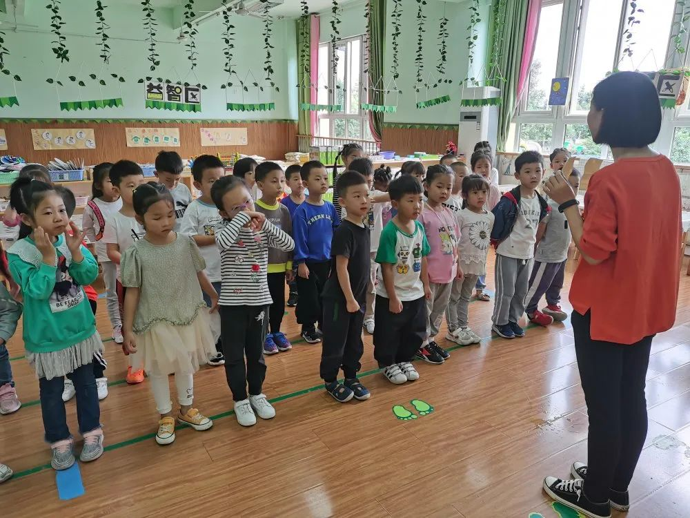
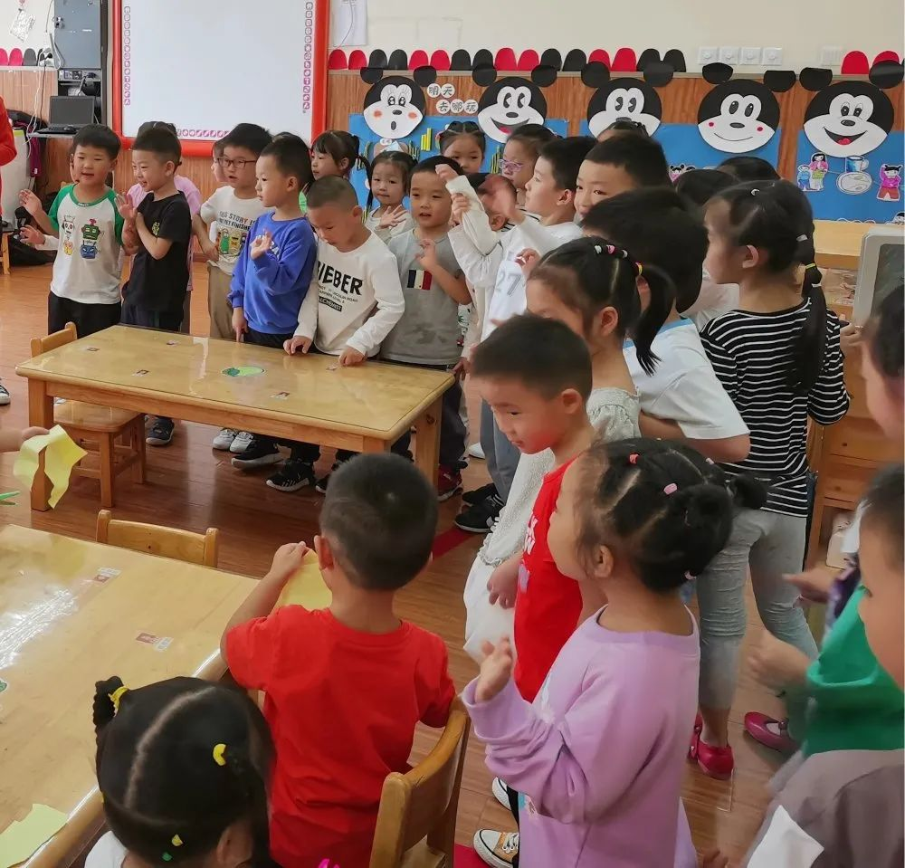
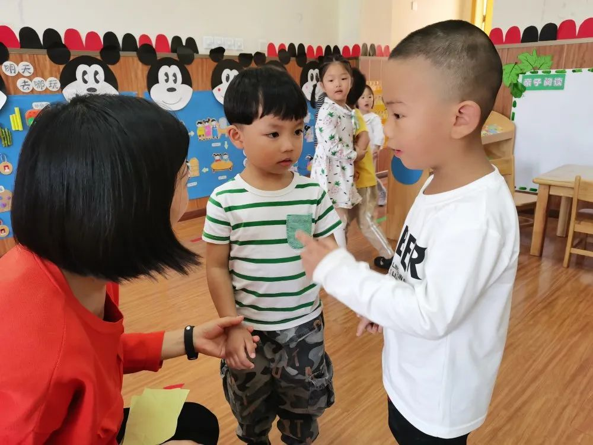
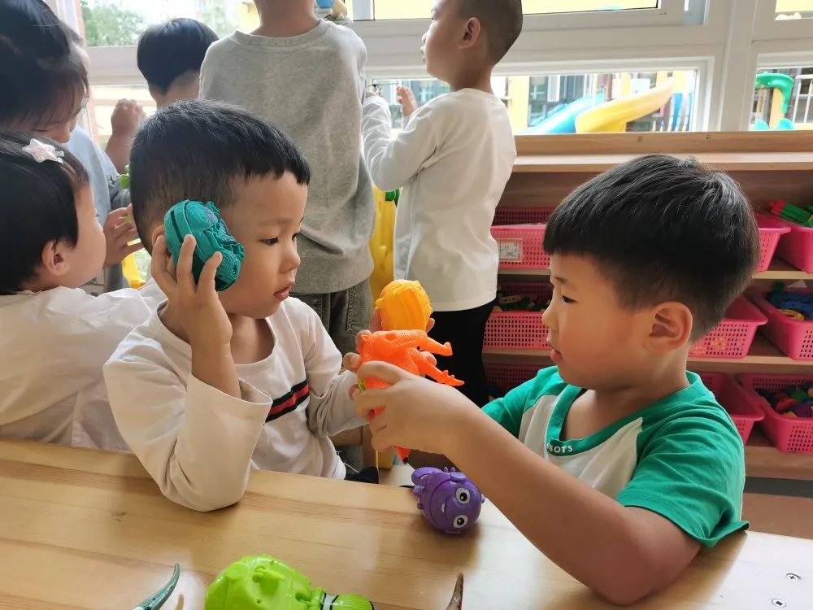
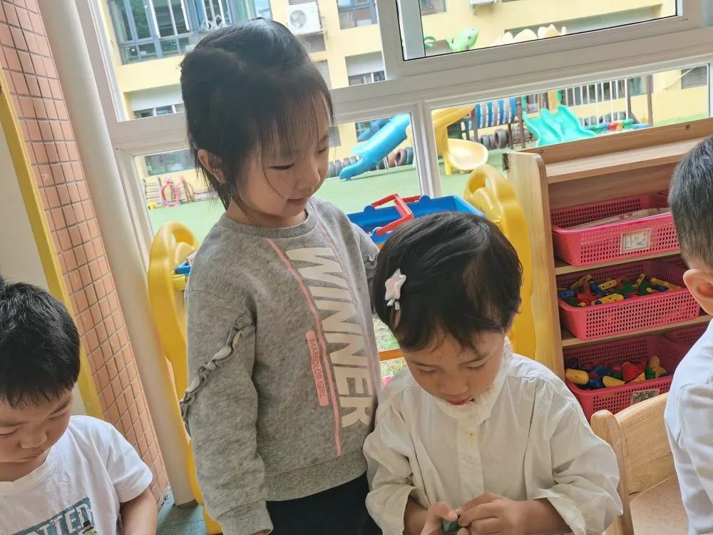
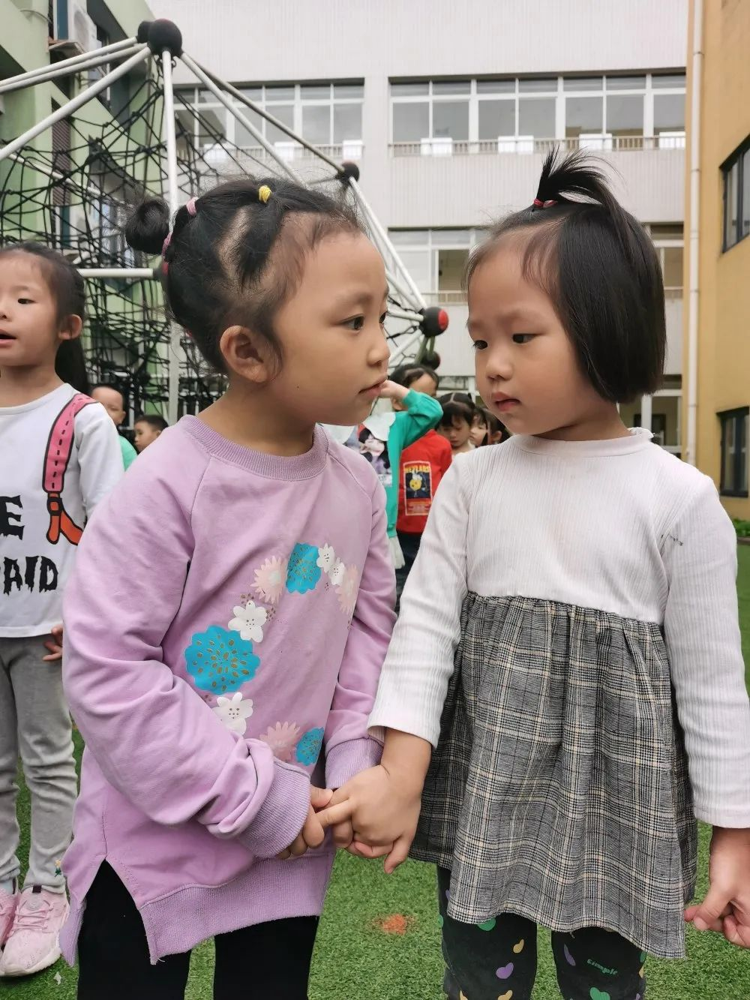
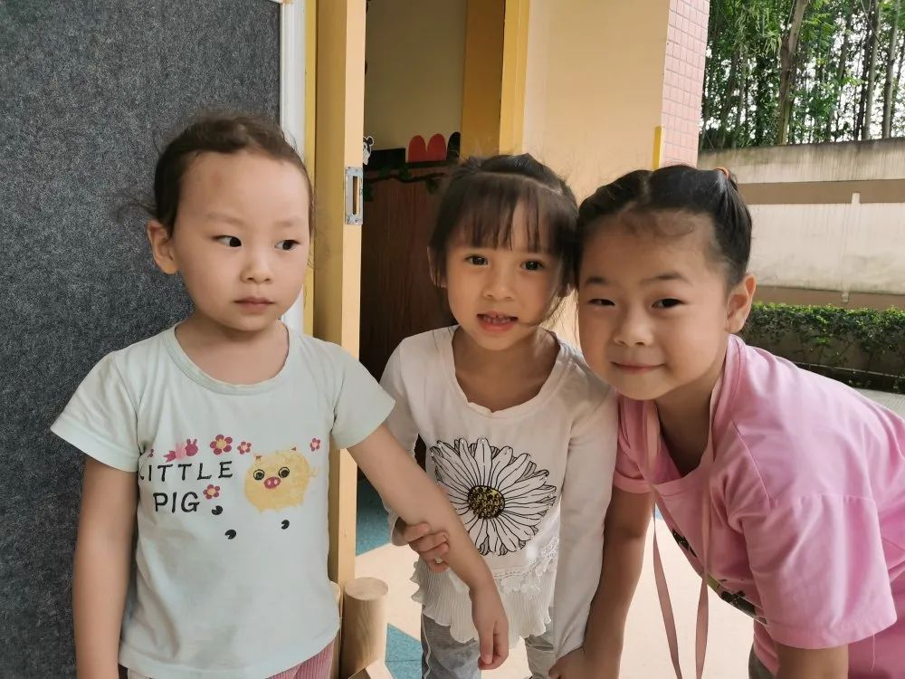
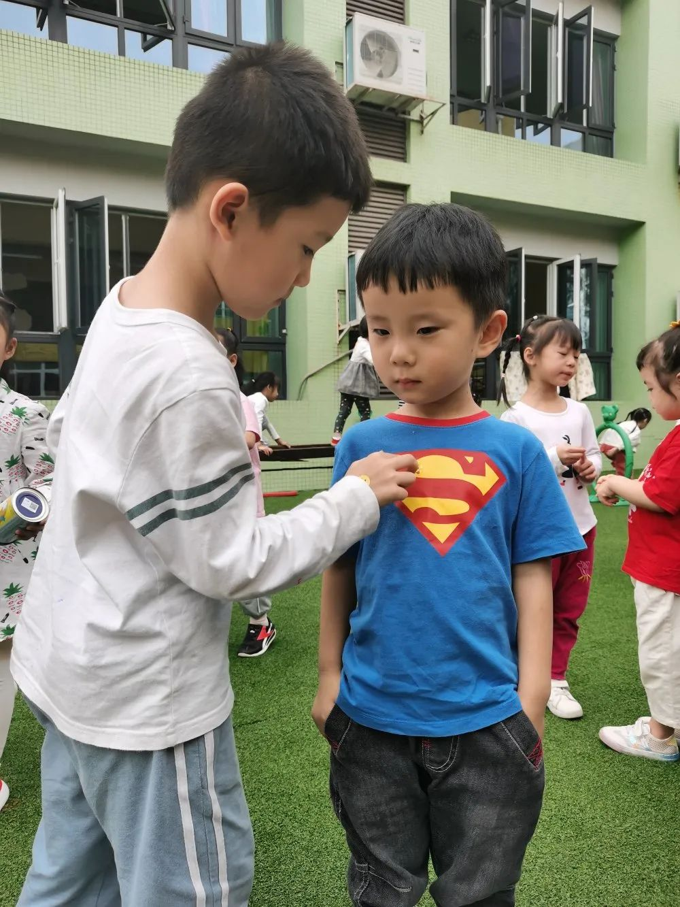
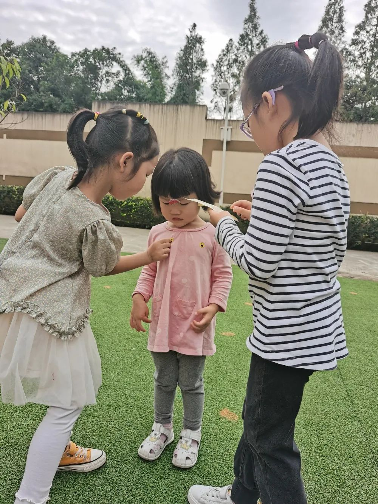
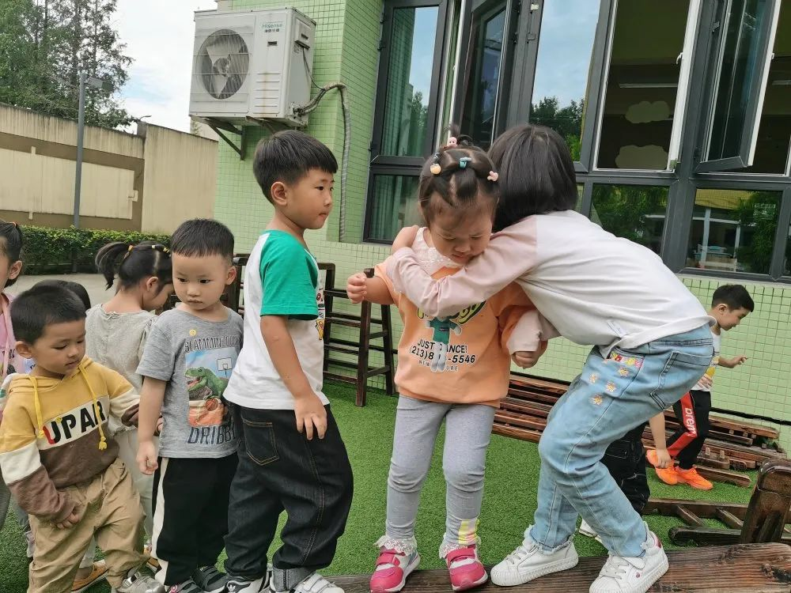

九江万家幼儿园 成都市双流区九江万家幼儿园 2020-09-22 17:50 发表于四川

点击上面“蓝字”关注我们！


我是大班哥哥姐姐啦
中班幼儿升入大班后对于新的班级环境表现出了极大的新鲜感和好奇心。作为幼儿园里的哥哥姐姐，他们适应了幼儿园的集体生活，也了解了集体生活的基本规则，与老师和同伴都建立了相对稳定、良好的关系。因此通过鼓励孩子迁移中小班集体生活的经验，学习用多种方式关心、帮助弟弟妹妹，在交往中学习换位思考可以很好的促进孩子们的社会性发展。

如何认识弟弟妹妹?
围绕《我是大班哥哥姐姐》这一主题，大二班举行了一场别开生面的“认识弟弟妹妹”的活动。活动前孩子们和老师共同讨论和小班弟弟妹妹相互认识的方式：热情主动地向弟弟妹妹介绍自己的名字和所在班级，可以带着他们玩一玩，也可以抱抱他们，还可以把自己得到的小贴片作为礼物送给弟弟妹妹……


出发，社交小达人即刻上线!
讨论完毕，孩子们兴高采烈的来到了小五班的活动室，积极的和弟弟妹妹打着招呼，热情的介绍着自己!







甜蜜合影







别怕，我来保护你


《指南》中提到：幼儿社会领域的学习与发展过程是其社会性不断完善并奠定健全人格基础的过程。人际交往是幼儿社会学习的主要内容之一，也是其社会性发展的基本途径之一。
我们将不断的为孩子们提供交往的契机，鼓励他们在群体活动中积极、快乐的结交不同年龄阶段小伙伴，促进他们的良好社会性行为发展，培养全方面发展的万幼宝贝!

图文：大二班

排版：胡兴伟

您点的每个赞，我都认真当成了喜欢
阅读 169
分享 收藏
5 3